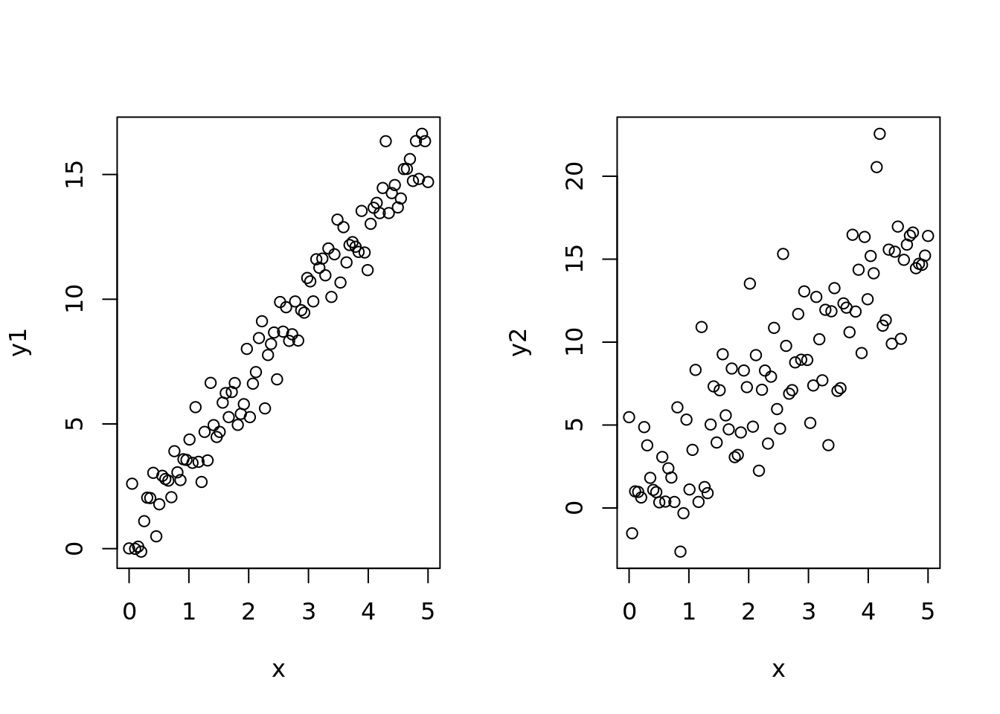
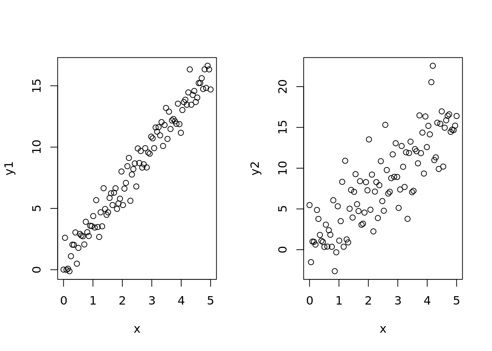

x <- seq(0, 5, length=100)
b0 <- 1
b1 <- 3
y1 <- b0 + b1 * x + rnorm(100)
y2 <- b0 + b1 * x + rnorm(100) * 3
par(mfrow=c(1,2))
plot(x, y1)
plot(x, y2)
::: {.callout-important} ## TIL
Today we learned about
#{R results = 'hide'} #| output: false library(ISLR2) library(dplyr) #library(cowplot) library(kableExtra) library(htmlwidgets) library(tidyverse)
looking at scatter plots using this data set https://online.stat.psu.edu/stat462/sites/onlinecourses.science.psu.edu.stat462/files/data/poverty/index.txt
#{r} url <- "https://online.stat.psu.edu/stat462/sites/onlinecourses.science.psu.edu.stat462/files/data/poverty/index.txt" df <- read_tsv(url) df %>% head(., 20) %>% kable
#{r} colnames(df) <- tolower(colnames(df)) x <- df$povpct y <- df$brth15to17
#```{r} plt <- function(){ plot( x, y, pch=20, xlab = “Pov %” ylab = “Birth rate (15-17)” ) } plt()
#```{r}
b0 <- 1
b1 <- 2
plt()
curve(b0 + b1 *x, 0, 30, add=T, col='firebrick')#{r} b0 <- c(-2, 0, 2) b1 <- c(0, 1, 2) par(mfrow=c(3,3)) for(B0 in b0){ for(B1 in b1){ plt() curve(B0 + B1 *x, 0, 30, add=T, col='firebrick') title(main = paste('b0 = ', B0, ' and b1 = ', B1)) } } goal is get a straight line that fits most of the data
#{r, fig.height=9, fig.width=12} b0 <- 10 b1 <- 1.1 yhat <- b0 + b1 * x plt() curve(b0 + b1 * x, 0, 30, add=T, col='firebrick') title(main = paste('b0 = ', b0, ' and b1 = ', b1)) segments(x, y, x, yhat) resids <- abs(y - yhat)^2 ss_resids <- sum(resids) title(main = paste('b0, b1, ss_residuals = ', b0, b1, ss_resids, sep=','))
Today, we learned
In our case we want to model \(y\) as a function of \(x\). In ‘R’ the formula for this looks like:
#{r} typeof(formula(y ~ x)) Linear regression model in R is called using the Linear Model, i.e., ‘lm()’
#{r} model <- lm(y ~ x)
#{r} summary(model)
x <- seq(0, 5, length=100)
b0 <- 1
b1 <- 3
y1 <- b0 + b1 * x + rnorm(100)
y2 <- b0 + b1 * x + rnorm(100) * 3
par(mfrow=c(1,2))
plot(x, y1)
plot(x, y2)
model1 <- lm(y1 ~ x)
model2 <- lm(y2 ~ x)
par(mfrow=c(1,2))
plot(x, y1)
curve(
coef(model1)[1] + coef(model1)[2] * x,
add=T, col="red"
)
plot(x, y2)
curve(
coef(model2)[1] + coef(model2)[2] * x,
add=T, col="red"
)
summary(model1)
Call:
lm(formula = y1 ~ x)
Residuals:
Min 1Q Median 3Q Max
-2.0439 -0.6839 0.0187 0.6391 2.3167
Coefficients:
Estimate Std. Error t value Pr(>|t|)
(Intercept) 0.5200 0.1812 2.87 0.00502 **
x 3.1442 0.0626 50.23 < 2e-16 ***
---
Signif. codes: 0 '***' 0.001 '**' 0.01 '*' 0.05 '.' 0.1 ' ' 1
Residual standard error: 0.9127 on 98 degrees of freedom
Multiple R-squared: 0.9626, Adjusted R-squared: 0.9622
F-statistic: 2523 on 1 and 98 DF, p-value: < 2.2e-16summary(model2)
Call:
lm(formula = y2 ~ x)
Residuals:
Min 1Q Median 3Q Max
-7.0917 -2.0186 -0.1407 1.9004 8.9746
Coefficients:
Estimate Std. Error t value Pr(>|t|)
(Intercept) 0.3853 0.5936 0.649 0.518
x 3.1483 0.2051 15.349 <2e-16 ***
---
Signif. codes: 0 '***' 0.001 '**' 0.01 '*' 0.05 '.' 0.1 ' ' 1
Residual standard error: 2.99 on 98 degrees of freedom
Multiple R-squared: 0.7062, Adjusted R-squared: 0.7032
F-statistic: 235.6 on 1 and 98 DF, p-value: < 2.2e-16now to predict models
#{r} x <- df$povpct y <- df$brth15to17 plt()
Suppose we have a “new” state formed whose ‘povpct’ value is \(22\).
#{r} plt() abline(v=21, col="green") lines(x, fitted(lm(y~x)), col="red")
Q. What is the best guess for this prediction going to be? We could consider the graph and our best prediction is going to be the intersection. In \(R\), we can use the predict() function to do this:
#{r} new_x <- data.frame(x = c(21)) new_y <- predict(model, new_x) new_y
#{r} plt() abline(v=21, col="green") lines(x, fitted(lm(y~x)), col="red") points(new_x, new_y, col="purple")
We can make predictions not just for a single observation, but for a whole collection of observations.
#{r} new_x <- data.frame(x = c(1:21)) new_y <- predict(model, new_x)
This is what the plot looks like:
#{r} plt() for(a in new_x){abline(v=a, col="green")} lines(x, fitted(lm(y~x)), col="red") points(a, new_y, col="purple")